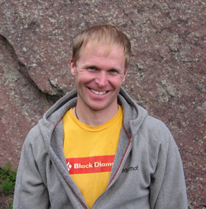

|
e-Grips Routesetting Interview: Justen Sjong 
eG: Justen, you’ve been routesetting for a long time. How did you get your start? Did you have any mentors? JS: I had several mentors through the years. The first setter who had a huge impact in my setting was Jimmy Redo. Jimmy had the ability to set hard sustained routes with small moves that were difficult to bypass, a great skill for gyms that aren’t tall.. My other mentor, Craig McClenahan, the Head Setter of the Touchstone facilities in CA, taught me a lot about organization in a large facility. He highlighted the importance of grade distribution and layout, of achieving a balance between quantity and quality, and product appearance. eG: You’ve worked at some of the best respected climbing gyms in the US and seen the industry shift from one where regular climbers were the primary participants to one where new and recreational climbers, groups, fitness users are all part of the greater demographic – any comments on this? How has it affected your routesetting, if at all? JS: I think it’s great the gyms are full of recreational climbers. They are the ones with real jobs who support the climbing industry. When someone has a full-time job and family it becomes very difficult to get outside except for easily accessible and well-protected climbs. I hope the mentality of the dedicated dirt bag climber will shift and embrace the recreational climber. I don’t see them having a negative impact on the outdoor scene at all. With routesetting, I do my best to create interesting sequences in the easier grades. The majority of the members who climb in the gyms climb routes between 5.8 and 5.11c. Those are the grades that MUST be fun to climb so they remain members. eG: Your new role at Movement Climbing and Fitness will be as Head Coach for a diverse range of youth and adult teams, right?. What are a few important things that you would you say make for a successful coaching program at a commercial gym? How can routesetters and coaches work together? JS: The route setters MUST set and tweak the 5.8 to 5.11c climbs so they have an interesting sequence and are technical for the grade. Route turn-over must happen on a scheduled routine. It becomes VERY difficult to train members on climbs that have been around for months. eG: Local climbers and gym folks across the board are excited about Movement… as a part of the operation and someone who has worked in a lot of gyms – what are you most excited about with the new gym? JS: The natural light and open feel of the gym which creates a great place to hang out and builds a community. eG: Do you have a routesetting 'philosophy' or style? JS: I like to set sustained climbs that the vertically challenged will enjoy. I think it’s important that setters understand the importance of building a quality product in a timely manner. eG: A couple tricks or tips you can suggest to routesetters in the industry who are just starting out? JS: 1) Start by creating a hand sequence and then add the feet so the climb flows. The flow of a climb is all about the FEET. 2) Don’t get too ‘creative’ at first. Just master the basic four wrist rotations: Downpull, Sidepull, Undercling, Gaston. eG: Alright, we’ve got to hear about the 4:20 route taping program. You had set at some gyms in California and applied this and have since used it at the Spot Gym in Boulder. Whose idea was this? You prefer it? JS: Andres at Mission Cliffs is the one who is responsible for the 4:20 tape plus every setter can remember 4:20. I had the same arguments that I have heard from setters and members. “You can’t see the tape sometimes!” That is true but part of your job as a setter is to sell climbing. When a possible new member walks in the front door the confusion of the tape is a turn-off. The end product looks better from a distance and tape direction doesn’t change your setting. eG: The real business… what about outdoor climbing… this is obviously something you excel at as a prolific 5.14 climber and new route developer. What most motivates you as a climber? JS: Long consistent climbing, I love getting pumped and doing my best to keep my head together. eG: If you could be anywhere in the world developing a new route, where would it be… what would the route be like? JS: A 3000’ climb in a slightly remote area with a variety of climbing: crack, face to slab, steep. eG: And e-Grips… what is it about eG you love? Favorite sets? What would you like to see more of? JS: I love the shapes from e-Grips! Obviously the shapes are cool and simple at the same time. The fact that I don’t need to use Martini Bolts is a huge bonus! eG: Thanks Justen – good luck with routesetting and coaching at Movement – we’ll hope to see some new young guns coming out of your program in the coming years! |